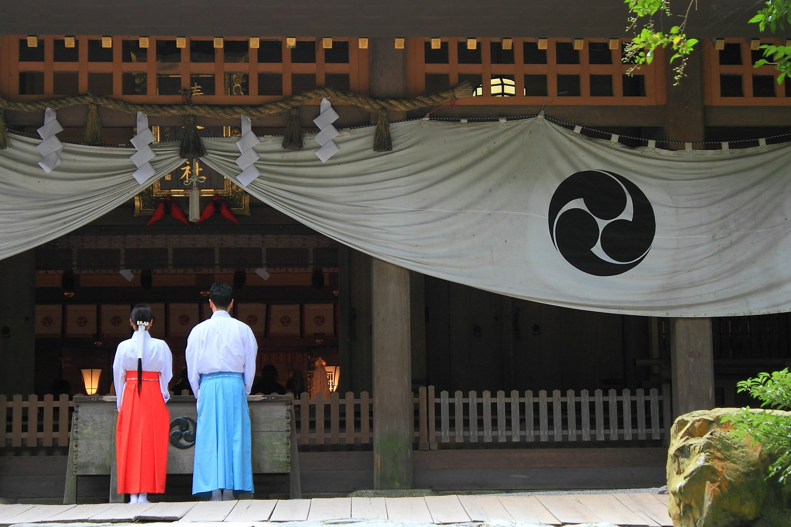
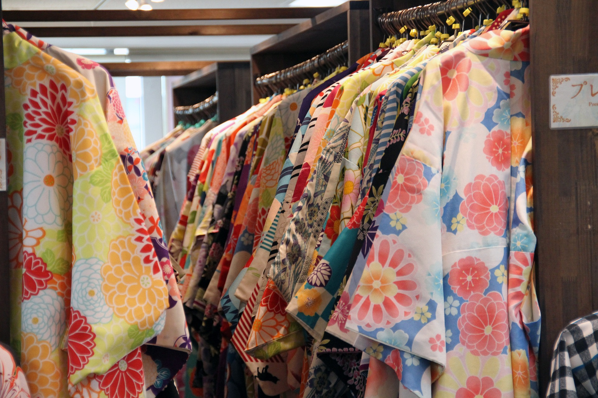
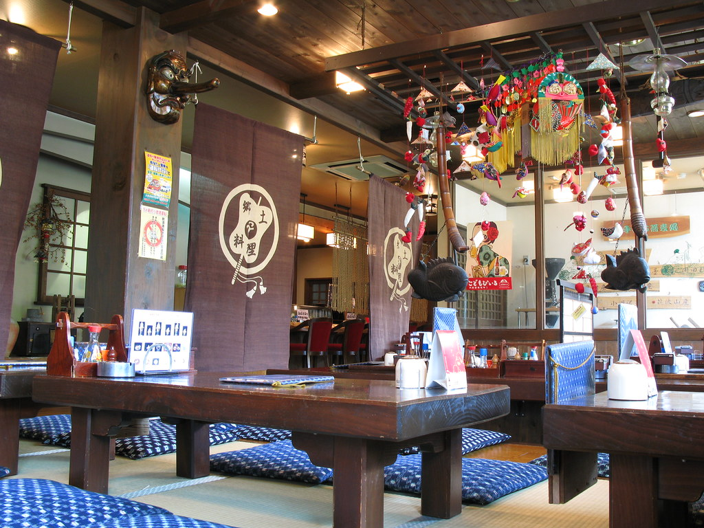

Given the city's history, it is no surprise that there is a strong traditional influence throughout Tokyo. Below are some important facts and reminders for visitors to know in order to respect the local culture!
- Religion 
- Japan is primarily a Shinto and Buddhist nation, both of which are usually practiced simultaneously. As such, there are temples and shrines scattered across the country, many of which are open to foreign visitors!
- Clothing 
- Traditional Japanese clothing includes the kimono and yukata, worn in the winter and summer respectively. Due to it's shy nature, Japanese culture relies on modesty in terms of clothing. With that being said, the new generation is slowly introducing Western ideals, including those regarding modesty, into Japanese culture. As a visitor, plan to dress a little more conservatively than in the the US or Europe.
- Public Behavior
- Japan is known for it's extremely polite anad respectful culture. It is important to abide by social etiquette rules whilst visiting. Such rules include:
- standing on the right and walking on the left (especially on the metro)
- not pointing
- not smoking in public
- properly disposing of waste
- being quiet in public
- Table Manners 
- Japan's reserved culture calls for rather specific behavior at the dinner table. Some introductory table manners include:
- waiting for everyone to have food before eating
- Saying "ittadakimasu" at the beginning of every meal, and "gochisousamadeshita" at the end
- using designated chopsticks or the rear end of your chopsticks when eating food from a shared plate
- refraining from making excessive sounds, eg slurping, munching, and burping (except for noodles)
- when necessary, picking up the bowl and bringing it to your mouth rather than eating over the bowl
Licensed under Pixabay License
Licensed under Pixabay License
Licensed under Pixabay License
"Japanese restaurant / 食事処(しょくじどころ)" by TANAKA Juuyoh (田中十洋) is licensed under CC BY 2.0 
 .
.